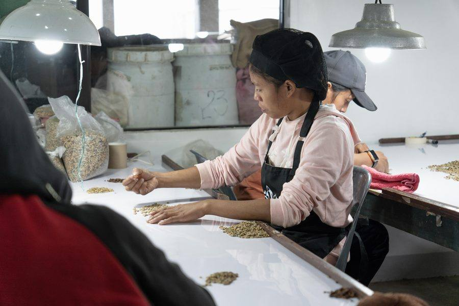
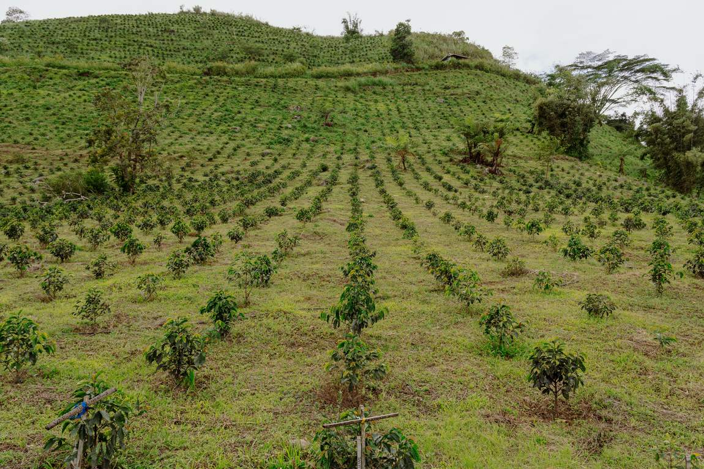
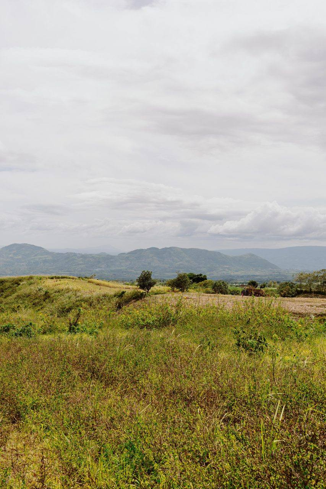
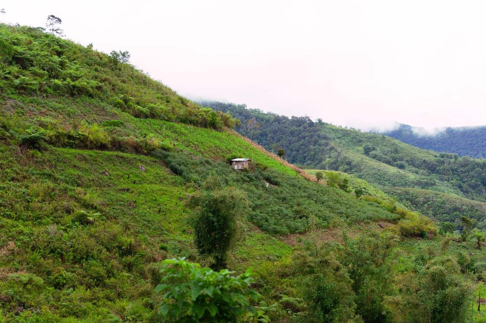
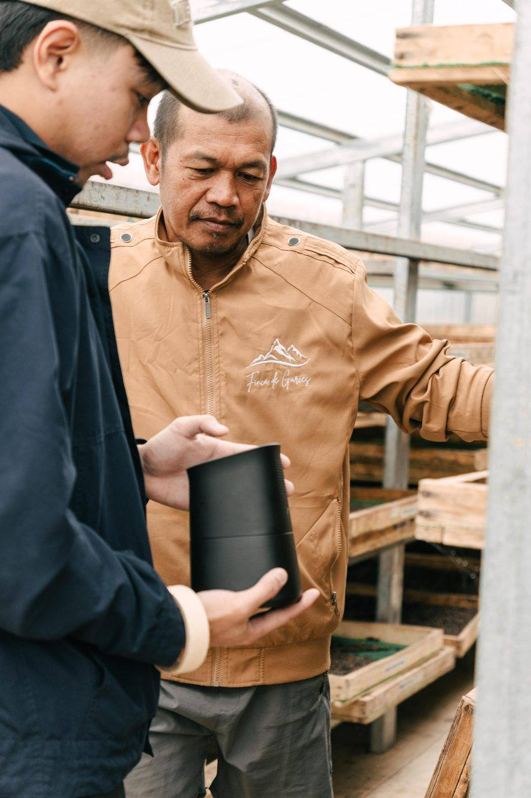

Our Story
Born of Resilience.
Rooted in Purpose.
When uncertainty closed every other door, one family turned to the only certainty they knew—the land beneath their feet and the faith that something worthy could grow from it. This is how Finca de Garces began, and this is how it grows still: slowly, honestly, and with deep care for every hand along the way.
A Seed Planted in Uncertainty
Founded in 2020 by Lito and Gemma Garces, Finca de Garces began not as a grand vision, but as a quiet response to uncertainty. In the middle of the pandemic, when the future felt unstable and unpredictable, it started as a simple project — a survival plan in case the world stood still longer than expected. With little experience and no clear roadmap, the family took a step into coffee farming on the slopes of Mt. Kalatungan, learning everything from the ground up.
The early days were far from easy. There were failed attempts, wasted effort, and moments where giving up felt like the more practical choice. But instead of walking away, they chose to stay.

“Coffee was no longer just a fallback plan; it became a craft — a calling that required intention, care, and commitment.”

Not Rushed. Only Refined.
Through continuous research, experimentation, and patience, small signs of progress began to appear. What once felt like trial and error slowly turned into understanding. The land responded. The process made sense. And what started as a necessity began to evolve into something more meaningful. Coffee was no longer just a fallback plan; it became a craft — a calling that required intention, care, and commitment.
Everything Into the Land
With that shift, the family made a decision to go all in. They expanded the farm, hired members of the local community, and nurtured more seedlings with a renewed sense of purpose. Every step forward was grounded in the same values that carried them through the beginning: resilience, patience, and a deep respect for the process.

“Every harvest carries the weight of its journey, and every cup reflects a belief that when something is built with care, it becomes a story worth sharing beyond borders.”

The Knowledge the Mountain Already Held
Backed by the support and wisdom of indigenous communities, Finca de Garces grew not just in size but in identity — a family-run endeavor built on hard lessons, shared knowledge, and steady growth.
Stewarded, Not Just Grown
Their approach to farming goes beyond production. It is rooted in sustainability, regenerative practices, and a deep respect for the natural habitat that sustains their craft. They believe in giving back to the land just as much as they give to people — nurturing the soil, preserving the ecosystem, and ensuring that every harvest contributes to the future of the land, not just the present. This commitment reflects a mindset that coffee is not simply grown, but stewarded with care and responsibility.

“Coffee is not simply grown, but stewarded with care and responsibility.”

The Cup That Started a Conversation
Today, Finca de Garces stands as more than a coffee farm. It represents a way of doing things differently. While their coffee is produced at scale, it is never rushed. Every bean is given the time, care, and attention it deserves, proving that growth does not have to come at the expense of quality. Beyond cultivation, the family is deeply committed to education — sharing their knowledge with fellow coffee farmers and enthusiasts who are equally passionate about the craft. Their dedication has been recognized on the national stage through three consecutive years at the Philippine Coffee Quality Competition — Best Arabica and Best Natural Processed Arabica in 2023, and the country’s Top 1 Arabica Estate Farm in 2025 — a testament to the excellence that comes from persistence and discipline.
Yet even as they reach new heights, they remain grounded. Grounded in their values, their culture, and their identity as a family. Grounded excellence defines who they are, no matter how high the elevation of their farms or how far their coffee travels. What began as a survival plan is now a growing movement to bring Filipino coffee to the world stage, carrying with it a story of resilience, stewardship, and purpose.
become part of this story
This is not just coffee, this is something meaningful.
Whether you are a specialty roaster searching for a source you can believe in, a café owner who wants provenance on every pour, a fellow farmer ready to grow with someone who has walked this road—or simply a person who cares about the story behind the cup: we would love to hear from you.